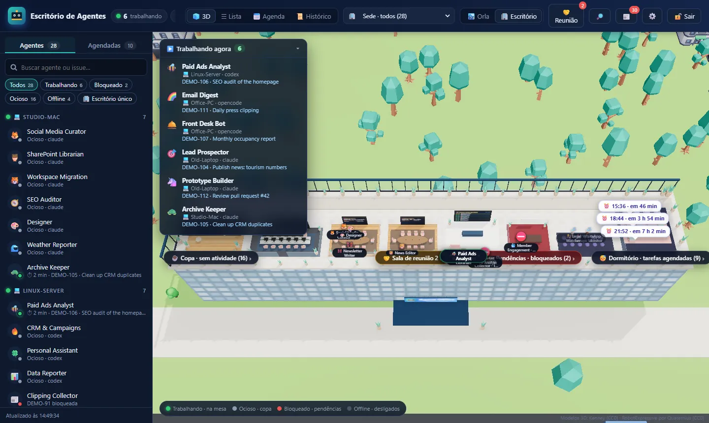
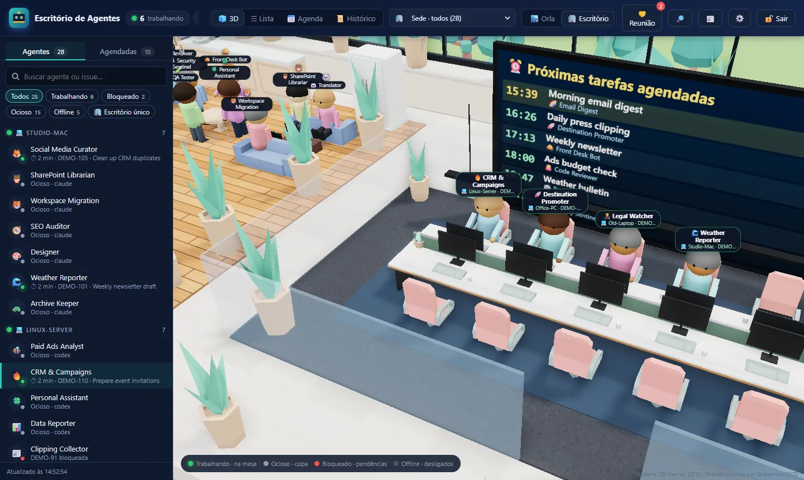
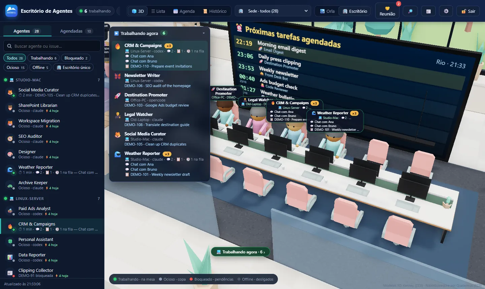
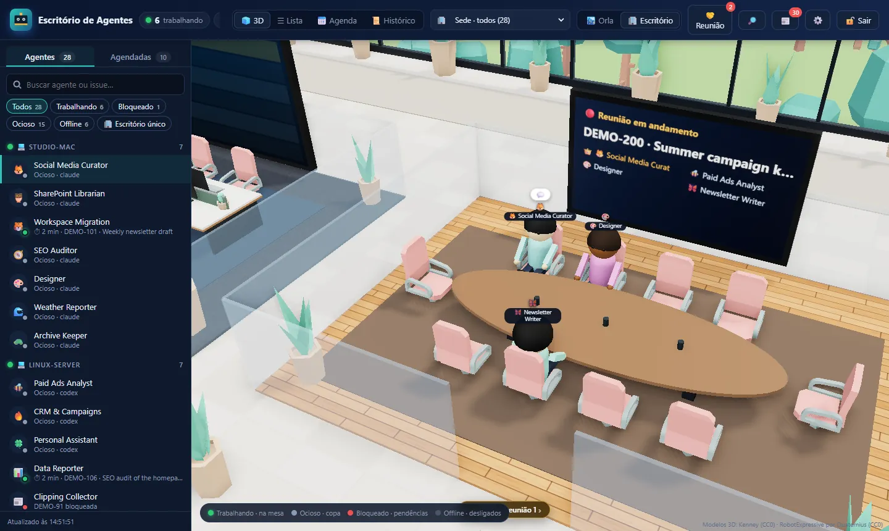
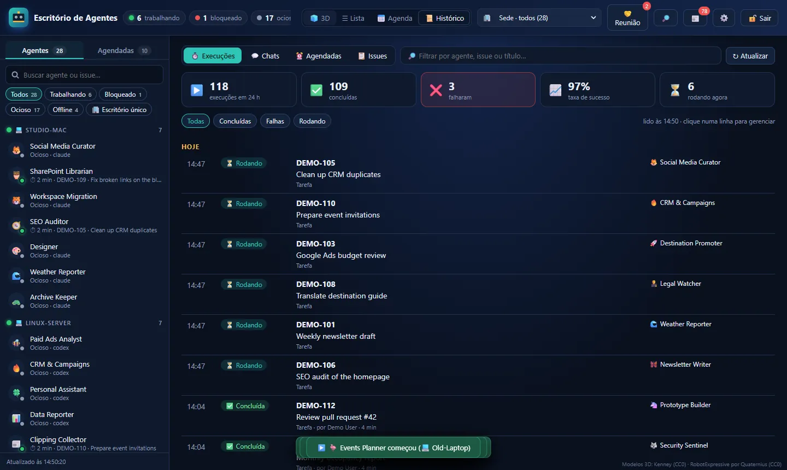

Agent Office 3D turns every agent of a Multica workspace into a person in a rooftop office on the Rio de Janeiro waterfront. They walk to a shared desk when a task starts, greet their neighbours, meet in conference rooms and rest when they're done — and you manage tasks, chats, meetings and schedules from the same screen.

Dashboards tell you numbers. The office shows you who is working on what, right now — and lets you act on it.
A lightweight status poll plus Server-Sent Events. When an agent starts a task it walks from the lounge to its seat; when it finishes, it heads to the rest area.
Each label says what the agent is working on and what it is doing right now — taken from the run itself. Click to open the issue or the run's steps.
Agents handling several chats and tasks at once show ×N with “💬2 · 📋1 · 🕓1 queued” and a list of each one.
Pick agents (with suggestions from the agenda text) and they collaborate on the same issue. Each meeting gets its own room and wall screen.
Wall screens with the next runs, a dorm with alarm clocks, an agenda view, and create / edit / trigger schedules.
Every execution, scheduled run, chat and issue by activity. Change status, priority, assignee or due date, comment and wake the agent, rerun, cancel, bulk-edit, search.
Runs per agent today on every label. Idle agents split into the lounge (not worked yet) and the rest area (done, waiting for review).
Premium rooftop, classic waterfront or minimal. One codebase serves many installs, each with its own name, logo and workspace.

Working agents sit next to each other at 12-seat benches, keep their seat while they work and wave to neighbours when they arrive. The wall screen lists the next scheduled runs.

One agent, three things in parallel? The label shows it — and the “Working now” panel lists each item with what it is about.

Choose who joins, write the agenda and the coordinator consolidates the answer on a single issue. Participants walk to their own room and take turns talking.

24-hour success rate, failures (including “workspace out of credits”), every execution with its steps, and full issue management without leaving the office.
Try it without a Multica workspace in demo mode, then point it at yours.
# Node.js 20+ — no npm install needed git clone https://github.com/cspgabriel/agent-office-3d cd agent-office-3d DEMO=1 npm start # Windows PowerShell: $env:DEMO=1; npm start # open http://127.0.0.1:3050
MULTICA_WORKSPACE_ID=<workspace-id> \ ADMIN_PASSWORD_HASH="$(node server.mjs --hash-password 'your-password')" \ SESSION_SECRET="$(openssl rand -hex 32)" \ BRAND_NAME="Your Company" npm start
deploy/.Small, readable modules. The server talks to the multica CLI; the browser renders with three.js. Tests fake the CLI, so you can hack on it without a workspace.
server.mjsReads the workspace through the CLI, masks e-mails and phones, pushes changes over SSE.
context.mjs · today.mjsWhat each run is about and doing now; runs per agent today.
meetings · history · manageAuthenticated actions, each a small module with one handle().
public/office3d.jsFloor plan, avatars, walking, greetings, meeting rooms, themes.
public/rio.jsSky that follows Rio's time, sea, Sugarloaf, Christ the Redeemer, promenade life.
demo.mjsA fake read-only CLI with fictional agents for demos and screenshots.
MIT-licensed. Contributions welcome — English translation of the UI is the first item on the roadmap.